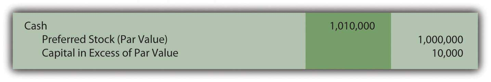
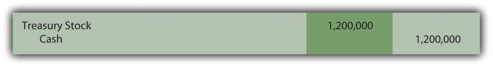
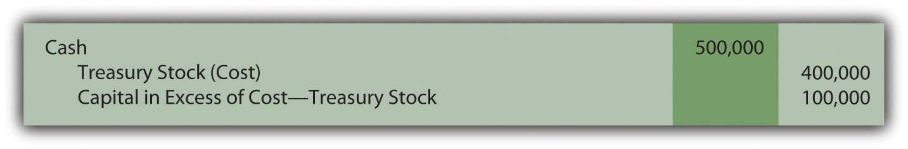
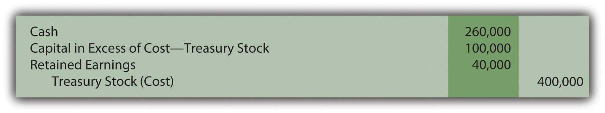

At the end of this section, students should be able to meet the following objectives:
Question: Some corporations also issue a second type of capital stock referred to as preferred stock. Probably about 10–15 percent of companies in the United States have preferred stock outstanding but the practice is more prevalent in some industries. How is preferred stock different from common stock?
Answer: Preferred stock is another version of capital stock where the rights of those owners are set by the contractual terms of the stock certificate rather than state law. In effect, common stockholders are voluntarily surrendering one or more of their rights in hopes of enticing additional investors to contribute money to the corporation. For common stockholders, preferred stock is often another possible method of achieving financial leverage in the same manner as using money raised from bonds and notes.
The term “preferred stock” comes from the preference that is conveyed to these owners. They are being allowed to step in front of common stockholders when the specified rights are applied. A wide variety of benefits can be assigned to the holders of preferred shares, including additional voting rights, assured representation on the board of directors, and the right to residual assets if the company ever liquidates.
By far the most typical preference is to cash dividends. As mentioned earlier in this chapter, all common stockholders are entitled to share proportionally in any dividend distributions. However, if a corporation issues preferred stock with a stipulated dividend, that amount must be paid before any money is conveyed to the owners of common stock. No dividend is ever guaranteed, not even one on preferred shares. A dividend is only legally required if declared by the board of directors. But, if declared, the preferred stock dividend comes before any common stock dividend.
Common stock is often referred to as a residual ownership because these shareholders are entitled to all that remains after other claims have been settled including those of preferred stock.
The issuance of preferred stock is accounted for in the same way as common stock. Par value, though, often serves as the basis for specified dividend payments. Thus, the par value listed for a preferred share frequently approximates fair value. To illustrate, assume that a corporation issues ten thousand shares of preferred stock. A $100 per share par value is printed on each stock certificate. If the annual dividend is listed as 4 percent, $4 per year ($100 par value × 4 percent) must be paid on preferred stock before any distribution is made on the common stock.
If ten thousand shares of this preferred stock are each issued for $101 in cash ($1,010,000 in total), the company records the following journal entry.
Figure 16.5 Issue Ten Thousand Shares of $100 Par Value Preferred Stock for $101 per Share
Companies often establish two separate “capital in excess of par value” accounts—one for common stock and one for preferred stock. They are then frequently combined in reporting the balances within stockholders’ equity.
Link to multiple-choice question for practice purposes: http://www.quia.com/quiz/2093027.html
Question: An account called treasury stockIssued shares of a corporation’s own stock that have been reacquired; balance is shown within stockholders’ equity section of the balance sheet as a negative amount unless the shares are retired (removed from existence). is often found near the bottom of the shareholders’ equity section of the balance sheet. Treasury stock represents issued shares of a corporation’s own stock that have been reacquired. For example, the December 31, 2008, balance sheet for Viacom Inc. reports a negative balance of nearly $6 billion identified as treasury stock.
A 2004 story in the Wall Street Journal indicated that Viacom had been buying and selling its own stock for a number of years: “The $8 billion buyback program would enable the company to repurchase as much as 13 percent of its shares outstanding. The buyback follows a $3 billion stock-purchase program announced in 2002, under which 40.7 million shares were purchased.”Joe Flint, “Viacom Plans Stock Buy Back, Swings to Loss on Blockbuster,” The Wall Street Journal, October 29, 2004, B-2.
Why does a company voluntarily give billions of dollars back to stockholders in order to repurchase its own stock? That is a huge amount of money leaving the company. Why not invest these funds in inventory, buildings, investments, research and development, and the like? Why does a corporation buy back its own shares as treasury stock?
Answer: Numerous possible reasons exist to justify spending money to reacquire an entity’s own stock. Several of these strategies are rather complicated and a more appropriate topic for an upper-level finance course. However, an overview of a few of these should be helpful in understanding the rationale for such transactions.
Question: To illustrate the financial reporting of treasury stock, assume that the Chauncey Company has issued ten million shares of its $1 par value common stock at an average price of $3.50 per share. The company now reacquires three hundred thousand of these shares for $4 each. How is the acquisition of treasury stock reported?
Answer: Under U.S. GAAP, several methods are allowed for reporting the purchase of treasury stock. Most companies appear to use the cost method because of its simplicity. The acquisition of these shares by Chauncey is recorded at the $1.2 million (three hundred thousand shares at $4 each) that was paid.
Figure 16.6 Purchase of Three Hundred Thousand Shares of Treasury Stock at a Cost of $4 Each
Because the cost of treasury stock represents assets that have left the business, this account balance is shown within stockholders’ equity as a negative amount, reflecting a decrease in net assets instead of an increase.
Except for possible legal distinctions, treasury stock is the equivalent of unissued stock. It does not receive dividendsDistributions made by a corporation to its shareholders as a reward when income has been earned; shareholders often receive favorable tax treatment when cash dividends are collected. and has no voting privileges.
Question: Treasury shares can be held forever or eventually sold at prices that might vary greatly from original cost. If sold for more, is a gain recognized? If sold for less, is a loss reported? What is the impact on a corporation’s financial statements if treasury stock is reissued? To illustrate, assume that Chauncey Company subsequently sells one hundred thousand shares of its treasury stock for $5.00 each. That is $1.00 more than these shares cost to reacquire. Is this excess reported as a gain within net income?
Answer: As discussed previously, transactions in a corporation’s own stock are considered expansions and contractions of the ownership and never impact reported net income. The buying and selling of capital stock are viewed as fundamentally different from the buying and selling of assets. Therefore, this reissuance is recorded by Chauncey through the following journal entry.
Figure 16.7 Sale of One Hundred Thousand Shares of Treasury Stock Costing $4 Each for $5 per Share
The “capital in excess of cost-treasury stock” is the same type of account as the “capital in excess of par value” that was recorded in connection with the issuance of both common and preferred stocks. Within stockholders’ equity, these accounts can be grouped or reported separately.
Question: Assume that Chauncey later sells another one hundred thousand of the treasury shares, but this time for only $2.60 each. The proceeds in this transaction are below the acquisition cost of $4 per share. What recording is made if treasury stock is sold at the equivalent of a loss?
Answer: Interestingly, the selling of treasury stock below cost is a transaction not well covered in U.S. GAAP. Authoritative rules fail to provide a definitive rule for reporting this reduction except that stockholders’ equity should be decreased with no direct impact recorded in net income.
The most common approach seems to be to first remove any capital in excess of cost recorded by the sale of earlier shares of treasury stock at above cost. If that balance is not large enough to absorb the entire reduction, a decrease is made in retained earnings as shown below. The $100,000 balance in capital in excess of cost-treasury stock was created in the previous journal entry.
Figure 16.8 Sale of One Hundred Thousand Shares of Treasury Stock Costing $4 Each for $2.60 per Share
One outcome of this handling should be noted. In the early chapters of this textbook, “retained earnings” was defined as all income reported over the life of a business less all dividend distributions to the owners. Apparently, this definition is not absolutely correct in all possible cases. In the above journal entry, retained earnings are also reduced as a result of a stock transaction where a loss occurred that could not otherwise be reported.
Link to multiple-choice question for practice purposes: http://www.quia.com/quiz/2093028.html
Link to multiple-choice question for practice purposes: http://www.quia.com/quiz/2093007.html
A corporation can issue preferred stock as well as common stock. Preferred shares are given specific rights that come before those of common stockholders. Usually, these rights involve the distribution of dividends. A set payment amount is often required before common stockholders receive any dividend. Subsequently, capital stock shares can be bought back from investors for a number of reasons. If so, they are known as treasury stock. In acquiring these shares, money flows out of the company so the account is reported as a negative balance within stockholders’ equity. If resold, the treasury stock account is reduced and capital in excess of cost is recognized if an amount above cost is received. However, if resold at a loss, any previous capital in excess of cost balance is removed followed by a possible reduction in retained earnings.